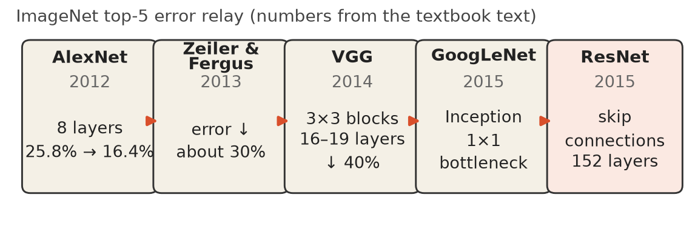
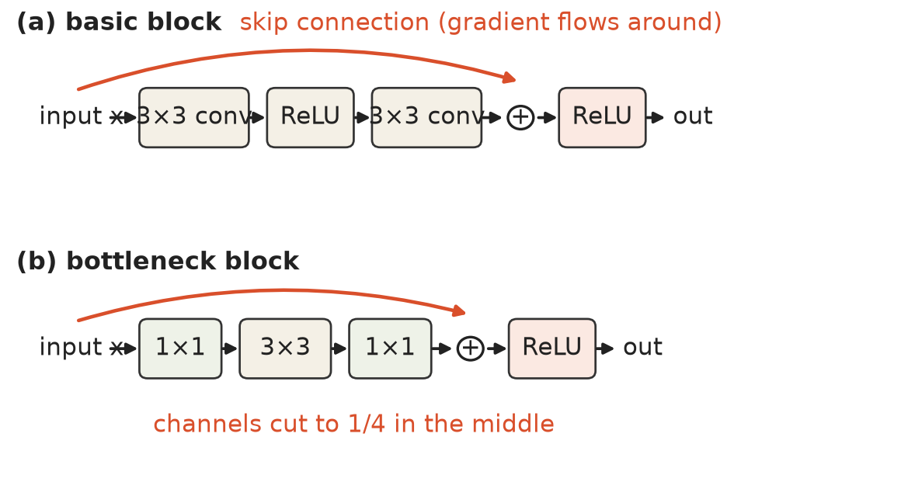

第 5 章 · 5.4.3 网络架构
十年接力：从 AlexNet 到 ResNet
卷积网络上世纪九十年代末就有。
2012 年 AlexNet 点火。
错误率 25.8% → 16.4%。
四件套：dropout、增广、动量、权重衰减。
依据：原书第 299–300 页
本集路线
5.4.3：四代架构
5.4.4：工程生态
精度、深度、效率、部署
正课第四十集
01 / 9
ILSVRC 接力 · 程序生成图
看图：五年五棒，误差一路降
2013 Zeiler & Fergus 加宽，误差降约 30%。
2014 VGG 堆 3×3，16–19 层。
误差再降 40%；两层 3×3 省 28%。
代价是计算量大幅增加。
依据：原书第 300 页

五棒接力：AlexNet→Zeiler & Fergus→VGG→GoogLeNet→ResNet，数字取自原书正文｜程序生成，未用教材或论文原图
正课第四十集
02 / 9
GoogLeNet · 效率
效率路线：先压图，再做分支
主干网把 224×224 压到 28×28。
Inception：多路卷积后拼接。
1×1 瓶颈：先压通道再做卷积。
删全连接，改全局平均池化。
依据：原书第 300–301 页
两个省钱招
1×1 瓶颈：约 8.5 倍
GAP：约 49 倍
先投影再卷积：Perona 1995
性能与 VGG 相当
正课第四十集
03 / 9
ResNet · 程序生成图
残差块：让梯度抄近道
跳跃连接让信息和梯度绕路。
网络学进出激活之间的差值。
瓶颈块：1×1 → 3×3 → 1×1。
18/34/50/101/152 层；2015 五项第一。
依据：原书第 302–303 页

残差块：basic 与 bottleneck 对照，红色弧线=skip connection｜程序生成，未用教材或论文原图
正课第四十集
04 / 9
Mobile networks
第五棒：给手机省算力
反向潮流：给移动设备做小网络。
MobileNets：深度可分离卷积。
宽度、分辨率两个倍率可调。
MobileNetV2 倒残差；ShuffleNet 洗牌。
依据：原书第 303 页
轻量化名单
MobileNetV2：倒残差
ShuffleNet：通道洗牌
ShuffleNet V2：通道拆分
ESPNet 系列也在名单里
正课第四十集
05 / 9
5.4.4 模型动物园
模型动物园：下载、换头、微调
从 TorchVision 等动物园下权重。
名字出自 Caffe 主开发 Shelhamer。
主干 + 头：末尾几层叫头。
微调：用更贴近应用的数据训练。
依据：原书第 304–305 页
迁移学习
数据少：接线性模型
数据多：接整段网络
微调主干：学习率调小
一处预训练，搬到另一处
正课第四十集
06 / 9
尺子与 NAS
两个尺子，一种自动设计
参数量量大小，FLOPs 量计算负载。
低精度算术、权重压缩能省。
XNOR-Net：二值权重，开或关。
NAS 让算法试拓扑，省研究者时间。
依据：原书第 305–306 页
效率趋势
FBNet/EfficientNet/RegNet
新一代少 10× 参数
甚至能做无监督搜索
正课第四十集
07 / 9
深度学习软件
工具箱：框架与生态
十年间出现二十多个框架。
Caffe 基本被 PyTorch、TensorFlow 取代。
教材：Keras、MXNet、CS231n。
TensorBoard、Visdom、Classy Vision。
依据：原书第 306–307 页
训练指南
Karpathy 写了实用指南
帮你避开常见的坑
高层封装少写代码
正课第四十集
08 / 9
收束 · 作业 · 移交
接力跑完，留下两道题
口算：两层 3×3 替一层 5×5，省几成？
思考：参数量之外还有什么区别？
提示：数一数激活函数出现几次。
下一集：5.4.5 可视化权重与激活。
依据：原书第 299–307 页
交接
AlexNet → ResNet：152 层
模型动物园与工具箱
下一集看网络内部学到什么
正课第四十集
09 / 9